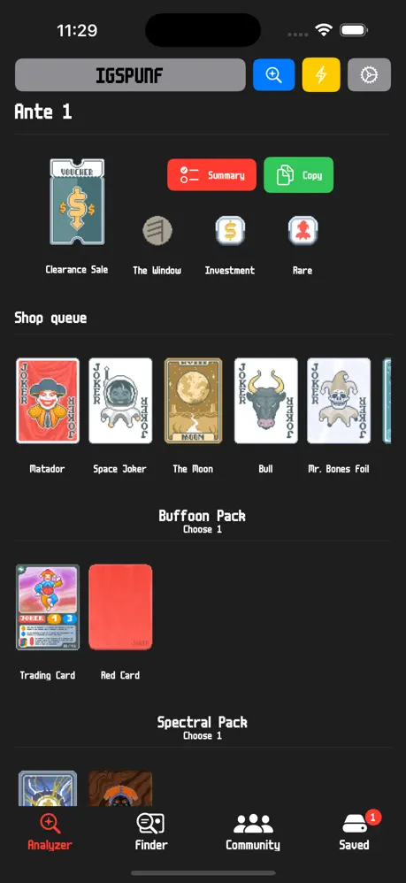
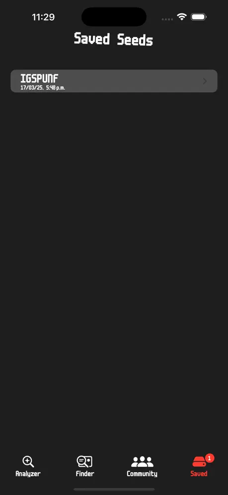
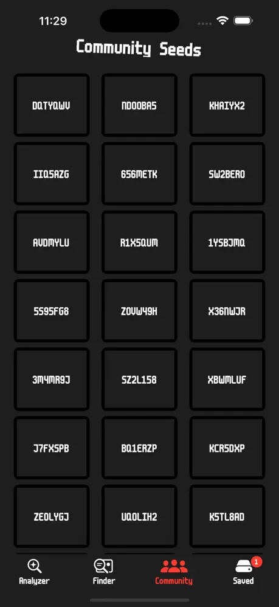
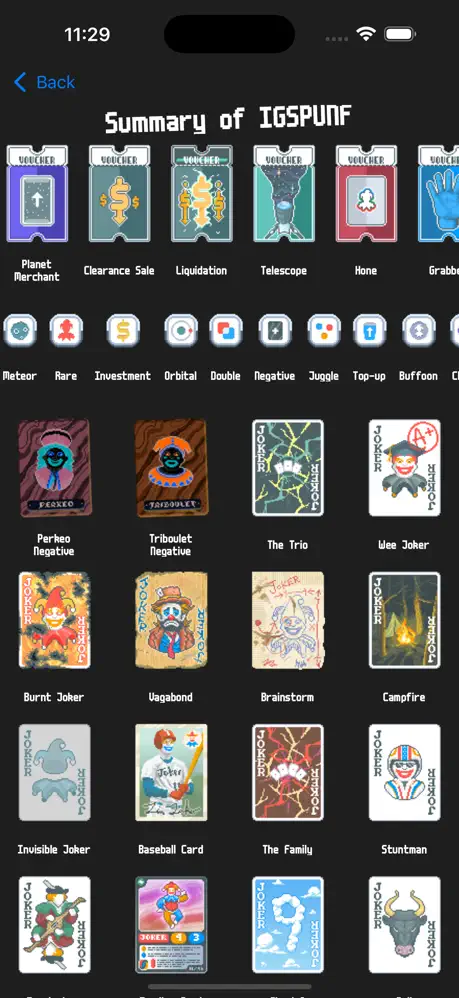
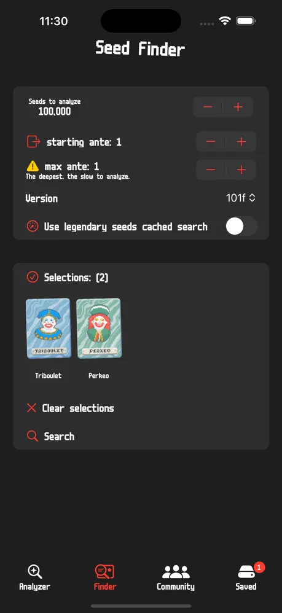

Built for quick scouting
Open the app and jump straight into the runs and seeds you want to revisit without digging through notes or screenshots.
Save memorable discoveries, revisit standout runs, and keep your favorite Balatro seeds close at hand with a fast, fan-made iOS companion.
Perkeo and this website are fan-made and are not affiliated with Balatro.

Open the app and jump straight into the runs and seeds you want to revisit without digging through notes or screenshots.
A focused mobile layout keeps seed tracking close by while you play, so the details you care about stay easy to reach.
Perkeo is designed around the community’s seed-sharing workflow, with a polished interface that feels at home on iOS.
These in-app previews show the Perkeo experience on iPhone, from browsing seeds to keeping the details of a great run close by.



